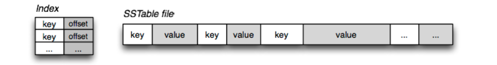
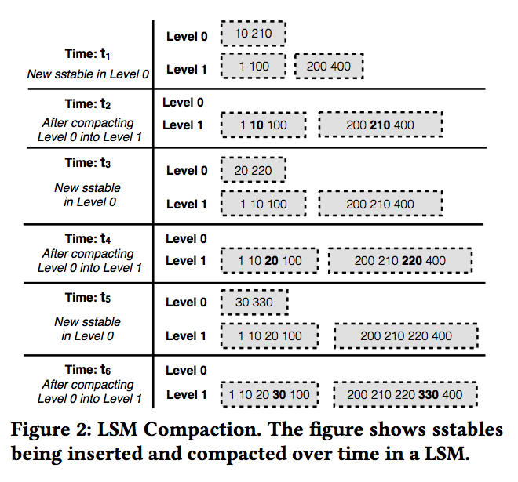
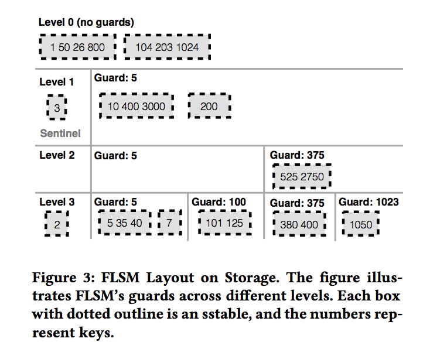
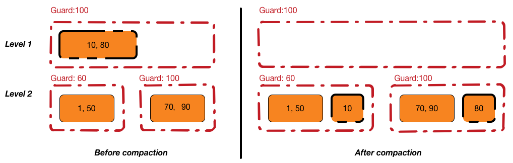

<!DOCTYPE html>
<!--[if lt IE 7]>      <html class="no-js lt-ie9 lt-ie8 lt-ie7"> <![endif]-->
<!--[if IE 7]>         <html class="no-js lt-ie9 lt-ie8"> <![endif]-->
<!--[if IE 8]>         <html class="no-js lt-ie9"> <![endif]-->
<!--[if gt IE 8]><!--> <html class="no-js"> <!--<![endif]-->
    <head>
        <!-- Google tag (gtag.js) -->
        <script async src="https://www.googletagmanager.com/gtag/js?id=G-44FB4FMFCD"></script>
        <script>
              window.dataLayer = window.dataLayer || [];
              function gtag(){dataLayer.push(arguments);}
              gtag('js', new Date());

              gtag('config', 'G-44FB4FMFCD');
        </script>
        <meta charset="utf-8">
        <title>    "PebblesDB: Building Key-Value Stores using Fragmented Log-Structured Merge Trees"
</title>
        <meta name="description" content="">
        <meta name="viewport" content="width=device-width, initial-scale=1">
        <meta content="This is the homepage of Zeyuan Hu" name="description">
        <meta content="Zeyuan Hu, Zeyuan, zeyuan hu, zeyuan ibm, IBM, Zeyuan IBM, UW Madison, University of Wisconsin Madison, zeyuan wisc, zeyuan IBM, zeyuan federation, Zeyuan UT-Austin, Zeyuan Texas, Zeyuan University of Texas at Austin, Zeyuan Amazon, Zeyuan Microsoft Research, Zeyuan Microsoft" name="keywords">
        <meta content="Zeyuan Hu" name="author">
        <script async src="https://pagead2.googlesyndication.com/pagead/js/adsbygoogle.js?client=ca-pub-8696888278948966"
                     crossorigin="anonymous"></script>
        <link href='https://fonts.googleapis.com/css?family=Gentium+Book+Basic|Merriweather:400,300' rel='stylesheet' type='text/css'>
        <link rel="stylesheet" href="../../../../../theme/css/cid.css">
        <!-- add font-awesome -->
        <script defer src="../../../../../theme/fa-5/js/all.js"></script>
        <link rel="stylesheet" href="../../../../../theme/academicons/css/academicons.css"/>
        <link href="https://zhu45.org/feeds/all.atom.xml" type="application/atom+xml" rel="alternate" title="Zeyuan Hu's Page Atom Feed" />
        <link href="https://zhu45.org/feeds/all.rss.xml" type="application/rss+xml" rel="alternate" title="Zeyuan Hu's Page RSS Feed" />
        <link href="../../../../../theme/images/favicon.ico" rel="icon">
    </head>
    <body>
        <!--[if lt IE 7]>
            <p class="chromeframe">You are using an <strong>outdated</strong> browser. Please <a href="http://browsehappy.com/">upgrade your browser</a> or <a href="http://www.google.com/chromeframe/?redirect=true">activate Google Chrome Frame</a> to improve your experience.</p>
        <![endif]-->
            <div class="container">
<header class="blog-header">
        <h1 id="site-title"><a href="../../../../.." style="color: black; text-decoration: none">Zeyuan Hu's Page</a></h1>
    <p></p>
    <nav>
            <a href="../../../../../about-me.html" style="padding: 10px">ABOUT</a>
            <a href="../../../../../archives/index.html" style="padding: 10px">ARCHIVES</a>
            <a href="../../../../../research.html" style="padding: 10px">RESEARCH</a>
    </nav>
</header>
    <div class="post">
      <header>
            <h1 class="post-title">"PebblesDB: Building Key-Value Stores using Fragmented Log-Structured Merge Trees"</h1>
            <div class="panel">
                <div class="panel-body">
<footer class="post-info">
    <span class="label label-default">Date</span>
    <span class="published">
        <time datetime="2018-03-30T00:45:00+08:00"> Mar 30, 2018</time>
    </span>


<span class="label label-default">Tags</span>
	<a href="../../../../../tag/papers.html">papers</a>
        /
	<a href="../../../../../tag/storage.html">storage</a>
        /
	<a href="../../../../../tag/log-structured-merge-tree.html">log-structured merge tree</a>
    
</footer><!-- /.post-info -->                </div>
            </div>
          <!-- <div class="post-title">"PebblesDB: Building Key-Value Stores using Fragmented Log-Structured Merge Trees"</h1></div> -->
          <!-- <div class="post-date"><time datetime="2018-03-30T00:45:00+08:00">Mar 30, 2018</time></div> -->
        </header>
        
        <article>
            <div class="toc">
<ul>
<li><a href="#introduction">Introduction</a></li>
<li><a href="#background">Background</a><ul>
<li><a href="#key-value-store-operations">Key-Value Store Operations</a></li>
<li><a href="#lsm">LSM</a><ul>
<li><a href="#lsm-operations">LSM Operations</a></li>
</ul>
</li>
<li><a href="#write-amplification-root-cause">Write Amplification: Root Cause</a></li>
</ul>
</li>
<li><a href="#fragmented-log-structured-merge-tree-flsm">Fragmented Log-Structured Merge Tree (FLSM)</a><ul>
<li><a href="#guards">Guards</a><ul>
<li><a href="#selecting-guards">Selecting Guards</a></li>
<li><a href="#inserting-and-deleting-guards">Inserting and Deleting Guards</a></li>
</ul>
</li>
<li><a href="#flsm-operations">FLSM Operations</a></li>
<li><a href="#limitations">Limitations</a></li>
</ul>
</li>
<li><a href="#building-pebblesdb-over-flsm">Building PebblesDB over FLSM</a><ul>
<li><a href="#improving-read-performance">Improving Read Performance</a></li>
<li><a href="#improving-range-query-performance">Improving Range Query Performance</a></li>
</ul>
</li>
<li><a href="#remarks">Remarks</a></li>
<li><a href="#reference">Reference</a></li>
<li><a href="#further-reading">Further Reading</a></li>
</ul>
</div>
<p>--- 05/22/18 UPDATE ---</p>
<div class="admonition note">
<p class="admonition-title">Note</p>
<p>I write this post when I start to read system papers and even before I read through PebblesDB's code. 
My system paper reading skill is lacking and I cannot fully grasp the essence of the paper back then. Please
jump to the <a href="#remarks">Remarks</a> section for a concise summary of LSM and FLSM (PebblesDB's
data structure). The other sections are filled with unnecessary details and they are helpful only when you
want to <a href="https://github.com/xxks-kkk/HyperPebblesDB">build something</a> based on the paper's implementation.</p>
</div>
<h2 id="introduction">Introduction</h2>
<ul>
<li>
<p>One fundamental problem is the high write amplification of key-value stores for write-intensive workloads. </p>
</li>
<li>
<p>Write amplification = the ratio of total write IO performed by the store to the total user written</p>
</li>
<li>
<p>High write amplification is bad</p>
<ul>
<li>increases the load on storage devices such as SSDs, which have limited write cycles before the bit error rate becomes unacceptable</li>
<li>results in frequent device wear out and high storage </li>
<li>
<p>reduces write throughput</p>
<p>RocksDB write throughput is 10% of read throughput thanks to write amplifcation</p>
</li>
</ul>
</li>
</ul>
<div class="admonition note">
<p class="admonition-title">Note</p>
<p>虽然LSM的写放大最近被研究很多，但是就写放大本身而言，是一个很古老的问题。在计算机体系中，如果相邻两层的处理单元不一致或者应用对一致性等有特殊的需求，就很可能出现写放大问题。比如CPU cache和内存cell，文件系统block和磁盘扇区，数据库block和文件系统block，数据库redo/undo，文件系统journal等.</p>
</div>
<ul>
<li>
<p>Reduce write amplification inuition: log-structured merge trees (LSM) data structures is the root cause to the write amplification</p>
<p>LSM stores maintain data in sorted order on storage, enabling efficient querying of data. However, when new data is inserted into an LSM-store, existing data is rewritten to maintain the sorted order, resulting in large amounts of write IO.</p>
</li>
<li>
<p>Key idea to reduce write amplification:</p>
<ul>
<li>Combine LSM with skip list: fragmenting data into smaller chunks that are organized using guards on storage. Guards allow FLSM to find keys efficiently. <sup id="fnref:1"><a class="footnote-ref" href="#fn:1">1</a></sup></li>
</ul>
</li>
<li>
<p>Why the idea can improve write throughput intuitively:</p>
<ul>
<li>Write operations on LSM stores are often stalled or blocked while data is compacted (rewritten for better read performance); by drastically reducing write IO, FLSM makes compaction signi￿cantly faster, thereby increasing write throughput.</li>
</ul>
</li>
</ul>
<h2 id="background">Background</h2>
<h3 id="key-value-store-operations">Key-Value Store Operations</h3>
<ul>
<li>
<p>The <code>get(key)</code> operation returns the latest value associated with key.</p>
</li>
<li>
<p>The <code>put(key, value)</code> operation stores the mapping from key to value in the store. If key was already present in the store, its associated value is updated.</p>
</li>
<li>
<p>Some key-value stores such as LevelDB provide an iterator over the entire key-value store. <code>it.seek(key)</code> positions the iterator <code>it</code> at the smallest key 
<code>&gt;= key</code>. The <code>it.next()</code> call moves <code>it</code> to the next key in sequence. The <code>it.value()</code> call returns the value associated with the key at the current iterator position.</p>
</li>
<li>
<p>The <code>range_query(key1, key2)</code> operation returns all key-value pairs falling within the given range. Range queries are often implemented by doing a <code>seek()</code> to <code>key1</code> and doing <code>next()</code> calls until the iterator passes <code>key2</code>.</p>
</li>
</ul>
<h3 id="lsm">LSM</h3>
<ul>
<li>
<p>LSM <sup id="fnref:2"><a class="footnote-ref" href="#fn:2">2</a></sup> is treated as a replacement for B+ Tree</p>
</li>
<li>
<p>Why not B+ Tree:</p>
<ul>
<li>low write throughput: B+ Trees are a poor fit for write-intensive workloads: updating the tree requires multiple random writes (10-100X slower than sequential writes).</li>
<li>high write amplification (61X write amplification)</li>
</ul>
</li>
<li>
<p>The log-structured merge trees (LSM) data structure takes advantage of high sequential bandwidth by only writing sequentially to storage. 
Writes are batched together in memory and written to storage as a sequential log (termed an <strong>sstable</strong>). Each sstable contains a sorted sequence of keys.</p>
<p></p>
</li>
</ul>
<div class="admonition note">
<p class="admonition-title">Note</p>
<p>A "Sorted String Table" then is exactly what it sounds like, it is a file which contains a set of arbitrary, sorted key-value pairs inside. Duplicate keys are fine, there is no need for "padding" for keys or values, and keys and values are arbitrary blobs. Read in the entire file sequentially and you have a sorted index. Optionally, if the file is very large, we can also prepend, or create a standalone <code>key:offset</code> index for fast access. That's all an SSTable is: very simple, but also a very useful way to exchange large, sorted data segments.</p>
</div>
<ul>
<li>
<p>Sstables on storage are organized as hierarchy of <strong>levels</strong>. Each level contains multiple sstables, and has a maximum size for its sstables.</p>
<p>In a 5-level LSM, Level 0 is the lowest level and Level 5 is the highest level. The amount of data (and the number of sstables) in each level increases as the levels get higher. The last level in an LSM may contain hundreds of gigabytes. Application data usually flows into the lower levels and is then compacted into the higher levels. The lower levels are usually cached in memory.</p>
</li>
<li>
<p>LSM maintains the following invariant at each level: all sstables contain disjoint sets of keys.</p>
<p>For example, a level might contain three sstables: <span class="math">\([1 \dots 6], [8 \dots 12]\)</span>, and <span class="math">\([100 \dots 105]\)</span>. Each key will be present in exactly one sstable on a given level. As a result, locating a key requires only two binary searches: one binary search on the starting keys of sstables (maintained separately) to locate the correct sstable and another binary search inside the sstable to find the key. If the search fails, the key is not present in that level.</p>
</li>
</ul>
<h4 id="lsm-operations">LSM Operations</h4>
<ul>
<li>
<p><code>get()</code> returns the latest value of the key</p>
<p>Since the most recent data will be in lower levels, the key-value store searches for the key level by level, starting from Level 0; if it finds the key, it returns the value. Each key has a sequence number that indicates its version. Finding the key at each level requires reading and searching exactly one sstable.</p>
</li>
<li>
<p><code>seek()</code> and <code>next()</code> require positioning an iterator over the entire key-value store. </p>
<p>implemented using multiple iterators (one per level); each iterator is first positioned inside the appropriate sstable in each level, and the iterator results are merged. The <code>seek()</code> requires finding the appropriate sstables on each level, and positioning the sstable iterators. The results of the sstable iterators are merged (by identifying the smallest key) to position the key-value store iterator. The <code>next()</code> operation simply advances the correct sstable iterator, merges the iterators again, and re-positions the key-value store iterator.</p>
</li>
<li>
<p><code>put()</code> writes the key-value pair, along with a monotonically increasing sequence number, to an in-memory skip list called the <strong>memtable</strong>. When the memtable reaches a certain size, it is written to storage as a sstable at Level 0. When each level contains a threshold number of files, it is compacted into the next level. </p>
<p>Assume Level 0 contains <code>[2, 3]</code> and <code>[10, 12]</code> sstables. If Level 1 contains <code>[1,4]</code> and <code>[9, 13]</code> sstables, then during compaction, Level 1 sstables are rewritten as <code>[1, 2, 3, 4]</code> and <code>[9, 10, 12, 13]</code>, merging the sstables from Level 0 and Level 1. Compacting sstables reduces the total number of sstables in the key-value store and pushes colder data into higher levels. The lower levels are usually cached in memory, thus leading to faster reads of recent data.</p>
</li>
</ul>
<div class="admonition note">
<p class="admonition-title">Note</p>
<p>Think about <em>memtable</em> as in-memory SSTable.</p>
</div>
<ul>
<li>Updating or deleting keys in LSM-based stores does not update the key in place, since all write IO is sequential. Instead, the key is inserted once again into the memtable with a higher sequence number; a delete key is inserted again with a special flag (often called a <strong>tombstone</strong> flag). Due to the higher sequence number, the latest version of the flag will be returned by the store to the user.</li>
</ul>
<h3 id="write-amplification-root-cause">Write Amplification: Root Cause</h3>
<p></p>
<ul>
<li>
<p>The root cause for write amplification: multiple rewrites of sstables during compaction. In other words, sstables can be rewritten multiple
times when new data is compacted into them.</p>
<p>For example, when compaction happens from <span class="math">\(t_1\)</span> to <span class="math">\(t_2\)</span>, sstable with <code>[1,100]</code> has to be rewritten to <code>[1,10,100]</code> and
sstable with <code>[200,400]</code> has to be rewritten as <code>[200,210,400]</code> (i.e., We have to read <code>[10,210]</code>, <code>[1,100]</code>, <code>[200,400]</code> out of levels, merge sort them, and write them back.)</p>
<p>L0文件里面包含的key同时在L1层的多个文件（甚至全部文件）被包含，所以如果想把L0下推到L1，那么就需要将整个L0/L1文件内的key读出来重新排序写入到L1。典型情况下，L0数据量是L1的1/10，为了这么点数据量重写所有数据显然不划算。L1...Ln道理类似</p>
</li>
</ul>
<div class="admonition note">
<p class="admonition-title">Note</p>
<p>放大问题的本质是一个系统对“随时全局有序"的需求有多么的强烈。所谓随时，就是任何的写入都不能导致系统无序；所谓全局，即系统内任意元单位之间都要保持有序。B-Tree系列是随时全局有序的典型代表，而Fractal tree打破了全局的约束，允许局部无序，提升了随机写能力；LSM系列进一步打破了随时的约束，允许通过后台的compaction来整理排序。在LSM这种依靠后台整理来保序的系统里面，系统对序的要求越强烈，写放大越严重。PebblesDB针对写放大提出的解决方案是弱化全局有序的约束，其将每一层进行分段，每个段称为一个guard，guard之间没有重叠的key，且每层的guard之间要求保序，但是guard内部可以无序。</p>
</div>
<h2 id="fragmented-log-structured-merge-tree-flsm">Fragmented Log-Structured Merge Tree (FLSM)</h2>
<ul>
<li>FLSM counters mutlple rewrites of sstables by fragmenting sstables into smaller units. Instead of rewriting the sstable, FLSM’s compaction simply appends a new sstable fragment to the next level. Doing so ensures that data is written exactly once in most levels</li>
</ul>
<div class="admonition note">
<p class="admonition-title">Note</p>
<p>Here, I'm guessing "append" really means pointer change from one node to another. Thus, the only time IO is performed when the data is first written
to sstable at a level.</p>
</div>
<h3 id="guards">Guards</h3>
<ul>
<li>
<p>In the classical LSM, each level contains sstables with disjoint key ranges (i.e., each key will be present in exactly one sstable). Maintaining this invariant is the root cause of write amplification, as it forces data to be rewritten in the same level.</p>
</li>
<li>
<p>The FLSM data structure discards this invariant: each level can contain multiple sstables with overlapping key ranges, so that a key may be present in multiple sstables. To quickly find keys in each level, FLSM organizes the sstables into guards (similar to level concept in skip list)</p>
</li>
<li>
<p>Each level contains multiple guards. Guards divide the key space (for that level) into disjoint units. Each guard <span class="math">\(G_i\)</span> has an associated key <span class="math">\(K_i\)</span>, chosen from among keys inserted into the FLSM. Each level in the FLSM contains more guards than the level above it; the guards get progressively more fine-grained as the data gets pushed deeper and deeper into the FLSM. As in a skip-list, if a key is a guard at a given level <span class="math">\(i\)</span>, it will be a guard for all levels <span class="math">\(&gt; i\)</span>.</p>
</li>
<li>
<p>Each guard has a set of associated sstables. Each sstable is sorted. If guard <span class="math">\(G_i\)</span> is associated with key <span class="math">\(K_i\)</span> and guard <span class="math">\(G_{i+1}\)</span> with <span class="math">\(K_{i+1}\)</span>, an sstable with keys in the range <span class="math">\([K_i,K_{i+1})\)</span> will be attached to <span class="math">\(G_i\)</span> . Sstables with keys smaller than the first guard are stored in a special sentinel guard in each level. The last guard<span class="math">\(G_n\)</span> in the level stores all sstables with keys <span class="math">\(\ge K_n\)</span> . Guards within a level never have overlapping key ranges. Thus, to find a key in a given level, only one guard will have to be examined.</p>
</li>
<li>
<p>In FLSM compaction, the sstables of a given guard are (merge) sorted and then fragmented (partitioned), so that each child guard receives a new sstable that fits into the key range of that child guard in the next level.</p>
</li>
</ul>
<p></p>
<div class="admonition note">
<p class="admonition-title">Note</p>
<p>Some observations about Figure 3:</p>
<ul>
<li>
<p>A <code>put()</code> results in keys being added to the in-memory memtable (not shown). Eventually, the memtable becomes full, and is written as an sstable to Level 0. Level 0 does not have guards, and collects together recently written sstables.</p>
</li>
<li>
<p>Each level has a sentinel guard that is responsible for sstables with keys &lt; than the first guard.</p>
</li>
<li>
<p>Data inside an FLSM level is partially sorted: guards do not have overlapping key ranges, but the sstables attached to each guard can have overlapping key ranges.（In level 3 Guard: 5, <code>[5,35,40]</code> and <code>[7]</code> are overlapping)</p>
</li>
</ul>
</div>
<h4 id="selecting-guards">Selecting Guards</h4>
<ul>
<li>
<p>In the worst case, if one guard contains all sstables, reading and searching such a large guard (and all its constituent sstables) would cause an un-acceptable increase in latency for reads and range queries</p>
</li>
<li>
<p>guards are not selected statically; guards are selected probabilistically from inserted keys, preventing skew.</p>
</li>
<li>
<p>Current selection policy: </p>
<ul>
<li>if the guard probability is 1/10, one in every 10 inserted keys will be randomly selected to be a guard.</li>
<li>The guard probability is designed to be lowest at Level 1 (which has the fewest guards), and it increases with the level number (as higher levels have more guards)</li>
</ul>
</li>
<li>
<p>if a key <span class="math">\(K\)</span> is selected as a guard in level i, it becomes a guard for all higher levels <span class="math">\(i + 1, i + 2\)</span> etc. The guards in level <span class="math">\(i + 1\)</span> are a strict superset of the guards in level <span class="math">\(i\)</span> (in Figure 3, key 5 is chosen as a guard for Level 1; therefore it is also a guard for levels 2 and 3.)</p>
</li>
</ul>
<h4 id="inserting-and-deleting-guards">Inserting and Deleting Guards</h4>
<ul>
<li>
<p>Guards are inserted asynchronously into FLSM</p>
</li>
<li>
<p>When guards are selected, they are added to an in-memory set termed the <em>uncommitted guards</em>. Sstables are not partitioned on storage based on (as of yet) uncommitted guards; as a result, FLSM reads are performed as if these guards did not exist. At the next compaction cycle, sstables are partitioned and compacted based on both old guards and uncommitted guards; any sstable that needs to be split due to an uncommitted guard is compacted to the next level. At the end of compaction, the uncommitted guards are persisted on storage and added to the full set of guards. Future reads will be performed based on the full set of guards.</p>
</li>
<li>
<p>guard deletion was not required</p>
</li>
<li>
<p>Guard deletion is also performed asynchronously similar to guard insertion. Deleted guards are added to an in-memory set. At the next compaction cycle, sstables are re-arranged to account for the deleted guards. Deleting a guard G at level i is done lazily at compaction time. During compaction, guard G is deleted and sstables belonging to guard G will be partitioned and appended to either the neighboring guards in the same level i or child guards in level i + 1. Compaction from level i to i + 1 proceeds as normal (since G is still a guard in level i + 1). At the end of compaction, FLSM persists metadata indicating G has been deleted at level i. If required, the guard is deleted in other levels in a similar manner. Note that if a guard is deleted at level i, it should be deleted at all levels &lt; i; FLSM can choose whether to delete the guard at higher levels &gt; i.</p>
</li>
</ul>
<h3 id="flsm-operations">FLSM Operations</h3>
<ul>
<li>
<p><code>get()</code> operation first checks the in-memory memtable. If the key is not found, the search continues level by level, starting with level 0. During the search, if the key is found, it is returned immediately; To check if a key is present in a given level, binary search is used to find the single guard that could contain the key. Once the guard is located, its sstables are searched for the key. Thus, in the worst case, a <code>get()</code> requires reading one guard from each level, and all the sstables of each guard.</p>
</li>
<li>
<p>Range queries require collecting all the keys in the given range. FLSM first identifies the guards at each level that intersect with the given range. Inside each guard, there may be multiple sstables that intersect with the given range; a binary search is performed on each sstable to identify the smallest key overall in the range. Identifying the next smallest key in the range is similar to the merge procedure in merge . When the end of range query interval is reached, the operation is complete, and the result is returned to the user.</p>
</li>
<li>
<p><code>put()</code> adds data to an in-memory memtable. When the memtable gets full, it is written as a sorted sstable to Level 0. When each level reaches a certain size, it is compacted into the next level. </p>
</li>
<li>
<p>Similar to LSM, updating or deleting a key involves inserting the key into the store with an updated sequence number or a deletion flag respectively. the deletion of the key does not result in deletion of the related guard; deleting a guard will involve a signi￿cant amount of compaction work. Thus, empty guards are possible.</p>
</li>
<li>
<p>Compaction:</p>
<ul>
<li>
<p>The sstables in the guard are first (merge) sorted and then partitioned into new sstables based on the guards of the next level; the new sstables are then attached to the correct guards. </p>
<p>Assume a guard at Level 1 contains keys <code>[1, 20, 45, 101, 245]</code>. If the next level has guards 1, 40, and 200, the sstable will be partitioned into three sstables containing <code>[1, 20]</code>, <code>[45, 101]</code>, and <code>[245]</code> and attached to guards 1, 40, and 200 respectively.</p>
</li>
<li>
<p>New sstables are simply added to the correct guard in the next level.</p>
</li>
<li>
<p>Two exceptions to no-rewrite rule:</p>
<ul>
<li>at the highest level (e.g,. Level 5) of FLSM, the sstables have to be rewritten during compaction; there is no higher level for the sstables to be partitioned and attached to.</li>
<li>for the second-highest level (e.g,. Level 4), FLSM will rewrite an sstable into the same level if the alternative is to merge into a large sstable in the highest level </li>
</ul>
</li>
</ul>
</li>
</ul>
<h3 id="limitations">Limitations</h3>
<ul>
<li>Since <code>get()</code> and range query operations need to examine all sstables within a guard, the latency of these operations is increased in comparison to LSM.</li>
</ul>
<h2 id="building-pebblesdb-over-flsm">Building PebblesDB over FLSM</h2>
<p>Due to the limitation of FLSM, several existing techniques are applied to improve read performance (i.e., <code>put()</code> and range query operations)</p>
<h3 id="improving-read-performance">Improving Read Performance</h3>
<ul>
<li>
<p>Cause: <code>get()</code> in FLSM causes all the sstables of one guard in each level to be examined. In contrast, in LSM, exactly one sstable per level needs to be examined.</p>
</li>
<li>
<p>Improvement technique:</p>
<ul>
<li>
<p>Sstable Bloom Filters:</p>
<ul>
<li>A Bloom filter is a space-efficient probabilistic data structure used to test whether an element is present in a given set in constant time</li>
<li>A bloom filter can produce false positives, but not false negatives (i.e., the key is in sstables but bloom filters say no)</li>
<li>PebblesDB attaches a bloom filter to each sstable to e￿ciently detect if a given key could be present in the sstable. </li>
</ul>
</li>
</ul>
</li>
</ul>
<h3 id="improving-range-query-performance">Improving Range Query Performance</h3>
<ul>
<li>
<p>Cause: require examining all the sstables of a guard for FLSM. Since LSM stores examine only one sstable per level, FLSM stores have significant overhead for range queries</p>
</li>
<li>
<p>Improvement technique:</p>
<ul>
<li>Seek-Based Compaction</li>
<li>Parallel Seek</li>
</ul>
</li>
</ul>
<h2 id="remarks">Remarks</h2>
<p>Log-structured Merge Tree (LSM) is a data structure that is used to provide good write performance by leverage log organizations.
In details, write to LSM-based storage system is first written to in-memory log called <em>MemTable</em>
by appending the corresponding key-value pair at the end of log. Doing the write through appending is
the key differentiator from the B-tree-based storage system as we are doing the sequential write instead of
the random update, which can reduce write amplification and improve the write performance. </p>
<p>To improve the read performance and make the system scalable
to the large datasets, LSM-based storage system organizes their logs into levels. The first layer
(numbered as 0), which
<em>MemTable</em> is stored in memory. All the logs (<em>sstables</em>) in the rest levels are written to the persistent storage devices. 
Acceptable read performance is maintained by lowering down the number of logs. 
This is done by <em>compactions</em>, which merges the logs in the upper level into the lower level (i.e.,
merging sstables from level 1 to level 2). However, there is problem with the merging process as we
need to read both logs from the upper level and lower level into memory and perform the merge. This mechanism
naturally introduces the write amplifcation effect, which decreases the write performance.</p>
<p></p>
<p>To combat write amplification, Fragmented Log-Structured Merge Trees (FLSM) and its implementation <em>PebblesDB</em> are proposed. 
The key idea is shown in picture above. FLSM uses <em>guard</em>, which
can be thought of as the key for a collection of logs. the keys in the collection of logs have to be 
in the range between the current guard's key and the previous guard's key. During the compaction, the 
the log in the upper level is split across the guard keys in the lower level. In the example shown
above, 10 and 80 from level 1 is split to 10 in guard 60 and 80 to guard 100 in level 2.
As one can see, this split and append avoids reading the data from lower level (e.g., level 2), which reduces
the write amplification and improve the write performance. Read performance stays still thanks to the guard 
as we can first search guard key and then logs within the guard to locate the corresponding value for the 
given key. </p>
<h2 id="reference">Reference</h2>
<ul>
<li>
<p><a href="http://www.cs.utexas.edu/~vijay/papers/sosp17-pebblesdb.pdf">PebblesDB: Building Key-Value Stores using Fragmented Log-Structured Merge Trees</a></p>
</li>
<li>
<p><a href="https://www.igvita.com/2012/02/06/sstable-and-log-structured-storage-leveldb/">SSTable and Log Structured Storage: LevelDB</a></p>
</li>
<li>
<p><a href="https://zhuanlan.zhihu.com/p/32225460">PebblesDB读后感</a></p>
</li>
</ul>
<h2 id="further-reading">Further Reading</h2>
<ul>
<li><a href="https://www.cs.utexas.edu/~vijay/papers/pebblesdb-sosp17-slides.pdf">PebblesDB Slides</a></li>
<li><a href="https://github.com/facebook/rocksdb/wiki/RocksDB-Tuning-Guide">RocksDB Tuning Guide</a></li>
<li><a href="https://ristret.com/s/gnd4yr/brief_history_log_structured_merge_trees">A Brief History of Log Structured Merge Trees</a></li>
</ul>
<div class="footnote">
<hr/>
<ol>
<li id="fn:1">
<p><a href="https://www.cs.cmu.edu/~ckingsf/bioinfo-lectures/skiplists.pdf">CMU slides</a>, <a href="http://igoro.com/archive/skip-lists-are-fascinating/">this post</a>, and
<a href="https://www.ics.uci.edu/~pattis/ICS-23/lectures/notes/Skip%20Lists.pdf">UCI reading</a> give an intuitive introduction to skip list. <a class="footnote-backref" href="#fnref:1" title="Jump back to footnote 1 in the text">↩</a></p>
</li>
<li id="fn:2">
<p><a href="http://www.benstopford.com/2015/02/14/log-structured-merge-trees/">This post</a> contains a plenty of good pointers to get familiar with LSM. Also,
<a href="http://webee.technion.ac.il/~idish/ftp/clsm.pdf">cLSM paper</a> (section 2.3 and Figure 2) also provides a good summary. <a class="footnote-backref" href="#fnref:2" title="Jump back to footnote 2 in the text">↩</a></p>
</li>
</ol>
</div>
<script type="text/javascript">if (!document.getElementById('mathjaxscript_pelican_#%@#$@#')) {
    var align = "center",
        indent = "0em",
        linebreak = "false";

    if (false) {
        align = (screen.width < 768) ? "left" : align;
        indent = (screen.width < 768) ? "0em" : indent;
        linebreak = (screen.width < 768) ? 'true' : linebreak;
    }

    var mathjaxscript = document.createElement('script');
    mathjaxscript.id = 'mathjaxscript_pelican_#%@#$@#';
    mathjaxscript.type = 'text/javascript';
    mathjaxscript.src = 'https://cdnjs.cloudflare.com/ajax/libs/mathjax/2.7.0/MathJax.js?config=TeX-AMS-MML_HTMLorMML';
    mathjaxscript[(window.opera ? "innerHTML" : "text")] =
        "MathJax.Hub.Config({" +
        "    config: ['MMLorHTML.js']," +
        "    TeX: { extensions: ['AMSmath.js','AMSsymbols.js','noErrors.js','noUndefined.js'], equationNumbers: { autoNumber: 'AMS' } }," +
        "    jax: ['input/TeX','input/MathML','output/HTML-CSS']," +
        "    extensions: ['tex2jax.js','mml2jax.js','MathMenu.js','MathZoom.js']," +
        "    displayAlign: '"+ align +"'," +
        "    displayIndent: '"+ indent +"'," +
        "    showMathMenu: true," +
        "    messageStyle: 'normal'," +
        "    tex2jax: { " +
        "        inlineMath: [ ['\\\\(','\\\\)'] ], " +
        "        displayMath: [ ['$$','$$'] ]," +
        "        processEscapes: true," +
        "        preview: 'TeX'," +
        "    }, " +
        "    'HTML-CSS': { " +
        "        styles: { '.MathJax_Display, .MathJax .mo, .MathJax .mi, .MathJax .mn': {color: 'inherit ! important'} }," +
        "        linebreaks: { automatic: "+ linebreak +", width: '90% container' }," +
        "    }, " +
        "}); " +
        "if ('default' !== 'default') {" +
            "MathJax.Hub.Register.StartupHook('HTML-CSS Jax Ready',function () {" +
                "var VARIANT = MathJax.OutputJax['HTML-CSS'].FONTDATA.VARIANT;" +
                "VARIANT['normal'].fonts.unshift('MathJax_default');" +
                "VARIANT['bold'].fonts.unshift('MathJax_default-bold');" +
                "VARIANT['italic'].fonts.unshift('MathJax_default-italic');" +
                "VARIANT['-tex-mathit'].fonts.unshift('MathJax_default-italic');" +
            "});" +
            "MathJax.Hub.Register.StartupHook('SVG Jax Ready',function () {" +
                "var VARIANT = MathJax.OutputJax.SVG.FONTDATA.VARIANT;" +
                "VARIANT['normal'].fonts.unshift('MathJax_default');" +
                "VARIANT['bold'].fonts.unshift('MathJax_default-bold');" +
                "VARIANT['italic'].fonts.unshift('MathJax_default-italic');" +
                "VARIANT['-tex-mathit'].fonts.unshift('MathJax_default-italic');" +
            "});" +
        "}";
    (document.body || document.getElementsByTagName('head')[0]).appendChild(mathjaxscript);
}
</script>
        </article>

        <footer>
          <!-- <p>This entry is posted in <a href="../../../../../category/system.html">system</a>.</p> -->
          <!-- <a href="../../../../../donate.html" class="button">Donate</a> -->
          <a href="https://paypal.me/zhu45?locale.x=en_US">paypal.me</a>
        </footer>
        
<div class="comments">
    <div id="disqus_thread"></div>
    <script type="text/javascript">
        var disqus_shortname = 'zhu45-org';
        (function() {
            var dsq = document.createElement('script'); dsq.type = 'text/javascript'; dsq.async = true;
            dsq.src = '//' + disqus_shortname + '.disqus.com/embed.js';
            (document.getElementsByTagName('head')[0] || document.getElementsByTagName('body')[0]).appendChild(dsq);
        })();
    </script>
    <noscript>Please enable JavaScript to view the <a href="http://disqus.com/?ref_noscript">comments powered by Disqus.</a></noscript>
    <a href="http://disqus.com" class="dsq-brlink">comments powered by <span class="logo-disqus">Disqus</span></a>
</div>

    </div>


<script>
   function topFunction() {
       document.body.scrollTop = 0;
       document.documentElement.scrollTop = 0;
   }
</script>

<footer class="blog-footer">
    <div id="copyright">
      Copyright (c) 2015-2025 <a href="../../../../../about-me.html">Zeyuan Hu</a>
    </div>
    <div id="archive">
      <a href="javascript:topFunction();">Back to top</a>
    </div>
</footer>
            </div>
<script>
    var _gaq=[['_setAccount','UA-37565522-2'],['_trackPageview']];
    (function(d,t){var g=d.createElement(t),s=d.getElementsByTagName(t)[0];
    g.src=('https:'==location.protocol?'//ssl':'//www')+'.google-analytics.com/ga.js';
    s.parentNode.insertBefore(g,s)}(document,'script'));
</script>
    </body>
</html>